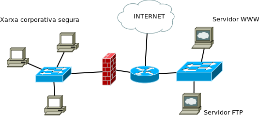
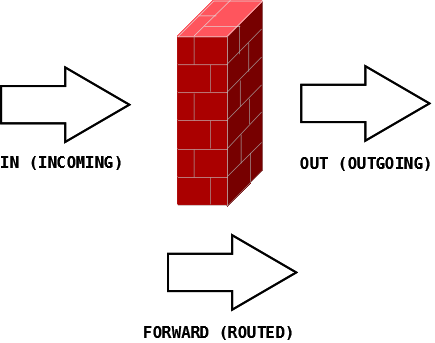

📚 Índice
- 1. Arquitectura de redes TCP/IP
- 1.1. Modelo de capas
- 1.2. ¿Qué es un servicio de capa?
- 1.3. Estructura de red
- 📝 Cuestionario
- 2. El protocolo IP
- 📝 Cuestionario 2
- 3. El protocolo TCP
- 4. Los servicios de red
- 📝 Actividad 1
- 📝 Cuestionario 3
- 5. Comandos
- 📝 Actividad 2
- 📝 Actividad 3
- 6. Elementos de interconexión
- 7. Interconexión de redes
- Bibliografía
1. Arquitectura de redes TCP/IP
Internet es una red pública y global de ordenadores interconectados mediante el protocolo de Internet (Internet Protocol, IP) y que se comunican mediante la conmutación de paquetes.
Internet es la unión de millones de subredes domésticas, académicas, comerciales y gubernamentales. Por este motivo también se conoce como la red de redes.
A pesar de la diversidad de arquitecturas de red existentes, la familia de protocolos TCP/IP se utiliza en la mayoría de las redes que forman Internet.
💡 ¿Sabías que...?
TCP/IP también se utiliza en intranets de empresas, centros educativos, redes Wi-Fi, oficinas y hogares.
La denominación TCP/IP hace referencia a dos de sus protocolos más importantes:
- IP — Internet Protocol
- TCP — Transmission Control Protocol
1.1. Modelo de capas
El modelo TCP/IP organiza las funciones de comunicación de una red en diferentes capas.
🔵 Capa de aplicación
La capa de aplicación TCP/IP se corresponde con las capas de aplicación, presentación y sesión del modelo OSI.

Es la capa que utilizan los programas para comunicarse a través de la red con otros programas.
Ejemplos de protocolos
- HTTP — HyperText Transfer Protocol
- FTP — File Transfer Protocol
- SMTP — Simple Mail Transfer Protocol
- SSH — Secure Shell
🟢 Capa de transporte
La capa de transporte TCP/IP se corresponde con la capa de transporte del modelo OSI.
Sus protocolos solucionan problemas relacionados con la fiabilidad, el orden y el control de los datos que llegan al destino.
TCP
TCP — Transmission Control Protocol
Es un protocolo fiable y orientado a conexión. Permite que los datos enviados por una aplicación lleguen correctamente y en orden al destino.
TCP fragmenta el flujo de datos procedente de la aplicación en unidades más pequeñas y posteriormente las transmite hacia las capas inferiores.
UDP
UDP — User Datagram Protocol
Es un protocolo no orientado a conexión y no garantiza la entrega de los datos ni su orden.
Su principal ventaja es la rapidez, por lo que se utiliza en situaciones donde la velocidad es más importante que la exactitud de todos los datos.
Algunos ejemplos son las transmisiones de voz y vídeo.
🟠 Capa de red o interred
La capa de Internet del modelo TCP/IP es equivalente a la capa de red del modelo OSI.
Su misión fundamental es conseguir que los paquetes puedan viajar desde el origen hasta el destino atravesando diferentes redes.
Los paquetes pueden incluso seguir caminos diferentes y llegar al destino en un orden diferente al de salida.
Esta capa también proporciona mecanismos de direccionamiento.
🟣 Capa de acceso a la red
La capa de acceso a la red del modelo TCP/IP engloba las capas de enlace y física del modelo OSI.
Se encarga de utilizar los protocolos necesarios para conectarse a la red física y permitir el envío de paquetes IP.
Capa física
El objetivo de la capa física es transportar una corriente de bits desde una máquina hasta otra.
En esta capa se definen las señales y los medios utilizados para transmitirlas.
Los medios físicos pueden presentar diferentes características en cuanto a ancho de banda, retardo, coste, instalación y mantenimiento.
¿Qué es un protocolo?
Un protocolo es un conjunto de normas organizadas y acordadas entre los participantes de una comunicación.
Su misión es regular determinados aspectos de la comunicación.
1.2. ¿Qué es un servicio de capa?
En el modelo TCP/IP, los protocolos de las capas inferiores ofrecen un servicio a los protocolos de la capa inmediatamente superior mediante una interfaz que comunica ambas capas.
De esta manera, cada capa proporciona determinadas funcionalidades a las capas superiores y, finalmente, facilita a las aplicaciones el uso de Internet y otras redes.
Encapsulamiento
Para conseguir sus objetivos, cada protocolo añade información de control a la unidad de datos que recibe de la capa superior.
📦 Idea clave
Cuando los datos bajan por las diferentes capas, cada capa añade su propia información de control. Este proceso recibe el nombre de encapsulamiento.
Unidades de información
La unidad de información recibe un nombre diferente dependiendo de la capa en la que se encuentre.
| Capa | Unidad de información |
|---|---|
| Transporte | Segmento |
| Red | Paquete |
| Enlace | Trama |
| Física | Bit |
1.3. Estructura de red
Cuando un dispositivo necesita acceder a información que no está almacenada localmente, puede utilizar una red para acceder a ella de forma remota.
Existen principalmente dos modelos de organización:
- Cliente/servidor
- Redes de igual a igual (P2P)
Modelo cliente/servidor
Una red cliente-servidor es aquella en la que los clientes están conectados a uno o varios servidores que centralizan diferentes recursos y servicios.
👤 Cliente
Dispositivo o proceso que solicita información o un servicio.
🖥️ Servidor
Dispositivo o proceso que responde a las solicitudes realizadas por los clientes.
Ejemplo: servidor de correo
En un entorno corporativo, los empleados pueden utilizar un servidor de correo electrónico para enviar, recibir y almacenar mensajes.
El cliente de correo del ordenador realiza una solicitud al servidor y este responde enviando los datos solicitados.
Subida y bajada de datos
- Subida: transferencia de datos desde el cliente hacia el servidor.
- Bajada: transferencia de datos desde el servidor hacia el cliente.
Redes de igual a igual (P2P)
En una red entre iguales, dos o más ordenadores están conectados y pueden compartir recursos sin necesidad de disponer de un servidor dedicado.
Cada dispositivo puede actuar como cliente o servidor dependiendo de la operación que esté realizando.
🏠 Ejemplo
Una red doméstica formada por dos ordenadores que comparten una impresora y archivos puede funcionar mediante un modelo punto a punto.
Características de las redes P2P
- No necesitan un servidor dedicado.
- Los recursos están distribuidos entre los dispositivos.
- Cada dispositivo puede actuar como cliente y servidor.
- Son sencillas de implementar en redes pequeñas.
- La administración de la seguridad resulta más compleja cuando aumenta el número de dispositivos.
Cliente/servidor frente a P2P
| Característica | Cliente/Servidor | P2P |
|---|---|---|
| Servidor dedicado | Sí | No necesariamente |
| Recursos | Centralizados | Distribuidos |
| Administración | Centralizada | Descentralizada |
| Uso habitual | Empresas y organizaciones | Redes pequeñas y domésticas |
📝 Cuestionario
- ¿Cuáles son las capas que forman el modelo OSI? Realiza un gráfico indicando las capas OSI y su relación con las capas de la familia TCP/IP.
- Pon ejemplos de protocolos de cada capa.
- ¿Qué es el encapsulamiento?
- ¿Qué dos tipos de estructura de redes hay? Explica sus diferencias.
2. El protocolo IP
2.1. Interconexión de redes
La versión más utilizada actualmente del protocolo IP es IPv4, definida en el RFC 791 de 1981. Actualmente dispone de un sucesor, IPv6, cuyo uso se está extendiendo progresivamente.
Todas las versiones del protocolo IP permiten el envío de paquetes entre equipos sin establecer previamente una conexión. Esto significa que el equipo origen envía los datos al destinatario sin esperar una confirmación de que estos hayan sido recibidos correctamente.
📌 IP no garantiza la entrega
El protocolo IP proporciona un servicio no orientado a conexión y no fiable. No garantiza que los paquetes lleguen a su destino, que lleguen en el orden correcto o que no se pierdan.
Por este motivo, cuando una aplicación necesita una comunicación fiable se utiliza normalmente TCP en la capa de transporte.
2.2. Configuración de un nodo IP
Para que un equipo pueda comunicarse mediante TCP/IP es necesario configurar los protocolos de red del sistema operativo.
Como mínimo, el equipo deberá disponer de información relacionada con su direccionamiento IP.
Configuración básica
- Dirección IP: identifica la interfaz de red dentro de la red.
- Máscara de subred: permite determinar qué parte de la dirección corresponde a la red y qué parte corresponde al equipo.
Configuración adicional
Si el equipo necesita comunicarse con otras redes o acceder a Internet, será necesario configurar además:
- Puerta de enlace predeterminada: normalmente corresponde al router que permite enviar tráfico hacia otras redes.
-
Servidores DNS:
permiten traducir nombres de dominio, como
www.google.com, a direcciones IP.
💡 Parámetros principales
Un equipo conectado a una red TCP/IP suele necesitar, como mínimo:
- Dirección IP
- Máscara de subred
- Puerta de enlace
- Servidores DNS
2.3. Funciones del protocolo IP
El protocolo IP realiza principalmente las siguientes funciones:
- Elegir el camino adecuado para enviar los paquetes hacia su destino mediante el encaminamiento.
- Proporcionar un sistema de direccionamiento lógico mediante las direcciones IP.
- Permitir el envío de paquetes sin establecer previamente una conexión.
Características del servicio IP
- No orientado a conexión: no se establece una conexión antes de enviar los paquetes.
- No fiable: IP no garantiza que los paquetes lleguen a su destino.
- Sin garantía de orden: los paquetes pueden seguir diferentes caminos y llegar en un orden diferente al de envío.
2.4. Direccionamiento IP
En IPv4, una dirección IP tiene una longitud de 32 bits.
La dirección se divide en dos partes:
- Parte de red: identifica la red a la que pertenece el dispositivo.
- Parte de host: identifica el dispositivo dentro de esa red.
Para determinar qué bits corresponden a la red y cuáles corresponden al host se utiliza la máscara de subred.
🔎 Ejemplo
Para la dirección:
192.168.1.25
utilizando la máscara:
255.255.255.0
la dirección de red es:
192.168.1.0
2.5. Clases de dirección IPv4
Históricamente, las direcciones IPv4 se dividieron en diferentes clases. Las principales eran las clases A, B y C.
- Clase A: el primer octeto identifica la red.
- Clase B: los dos primeros octetos identifican la red.
- Clase C: los tres primeros octetos identifican la red.
- Clase D: utilizada para multidifusión (multicast).
- Clase E: rango reservado para usos especiales y experimentales.
| Clase | Rango | Máscara estándar | Uso |
|---|---|---|---|
| A | 1.0.0.0 – 126.255.255.255 | 255.0.0.0 | Redes de gran tamaño |
| B | 128.0.0.0 – 191.255.255.255 | 255.255.0.0 | Redes de tamaño medio |
| C | 192.0.0.0 – 223.255.255.255 | 255.255.255.0 | Redes pequeñas |
| D | 224.0.0.0 – 239.255.255.255 | — | Multicast |
| E | 240.0.0.0 – 255.255.255.255 | — | Reservada |
⚠️ Importante
El direccionamiento basado en clases es un sistema histórico. Actualmente se utiliza principalmente CIDR, que permite utilizar prefijos de red de longitud variable.
2.6. Direccionamiento sin clase (CIDR)
Con el crecimiento de Internet quedó patente que el direccionamiento basado en clases no aprovechaba eficientemente el espacio de direcciones IPv4.
En 1993 se introdujo CIDR (Classless Inter-Domain Routing), o encaminamiento entre dominios sin clases.
CIDR permite indicar el número de bits utilizados para identificar la red mediante una barra seguida del número de bits.
📐 Ejemplo de CIDR
La red:
192.168.0.0/16
indica que los primeros 16 bits corresponden a la parte de red.
La máscara equivalente es:
255.255.0.0
| Notación CIDR | Máscara | Bits de red |
|---|---|---|
/8 |
255.0.0.0 | 8 |
/16 |
255.255.0.0 | 16 |
/24 |
255.255.255.0 | 24 |
2.7. Direcciones reservadas y especiales
Existen determinados rangos de direcciones IPv4 que tienen funciones especiales.
| Rango | Nombre | Función |
|---|---|---|
0.0.0.0/0 |
Ruta por defecto / todas las direcciones | Representa cualquier destino IPv4 en determinados contextos de configuración. |
127.0.0.0/8 |
Loopback | Comunicación interna con el propio equipo. |
169.254.0.0/16 |
Link-local | Direcciones asignadas automáticamente cuando no se obtiene una configuración DHCP válida. |
10.0.0.0/8 |
Privada | Utilizada en redes privadas. |
172.16.0.0/12 |
Privada | Utilizada en redes privadas. |
192.168.0.0/16 |
Privada | Muy utilizada en redes domésticas y pequeñas redes locales. |
2.8. Métodos de transmisión
Dependiendo del número de destinatarios, podemos distinguir tres métodos principales de transmisión.
📡 Unidifusión — Unicast
La comunicación se establece entre un emisor y un único destinatario.
1 → 1
📡 Multidifusión — Multicast
El emisor envía información a un grupo determinado de dispositivos.
1 → grupo
📡 Difusión — Broadcast
El mensaje se envía a todos los dispositivos de una determinada red IPv4.
1 → todos
Configurar una tarjeta de red usando el terminal
En sistemas Linux podemos utilizar diferentes herramientas para consultar y configurar las interfaces de red.
Identificar la interfaz de red
Los sistemas Linux actuales utilizan normalmente nombres
predecibles para las interfaces de red, como
enp2s0 o wlp3s0.
Para mostrar las interfaces disponibles podemos utilizar:
ifconfig -a
En sistemas Linux modernos también es habitual utilizar
el comando ip, por ejemplo:
ip addrConfigurar una interfaz mediante DHCP
En sistemas que utilizan el archivo tradicional
/etc/network/interfaces, una configuración
DHCP puede ser similar a la siguiente:
auto enp2s0
iface enp2s0 inet dhcpActivar la interfaz
Una vez configurada, la interfaz puede activarse mediante:
sudo ifup enp2s0Desactivar la interfaz
Para desactivar la interfaz:
sudo ifdown enp2s0⚠️ Sistemas Linux actuales
La configuración mediante
/etc/network/interfaces y
ifup/ifdown depende de la distribución
y de cómo esté configurada la gestión de red.
En muchas distribuciones actuales se utilizan
herramientas como NetworkManager o systemd-networkd.
📝 Cuestionario
- ¿Cuáles son los parámetros mínimos que se deben configurar en un nodo para que pueda conectarse a una red basada en TCP/IP?
- ¿Cuáles son las principales funciones del protocolo IP?
- ¿Por qué se implementó el direccionamiento sin clases (CIDR)? Razona la respuesta.
- Explica qué son las direcciones de loopback y link-local.
- ¿Qué diferencia existe entre Unicast, Multicast y Broadcast?
- ¿Qué información proporciona una máscara de subred?
- ¿Qué significa la notación 192.168.1.0/24?
3. El protocolo TCP
3.1. Interconexión de redes
El protocolo TCP (Transmission Control Protocol o protocolo de control de transmisión) fue diseñado para funcionar en redes poco fiables.
Es un protocolo de la capa de transporte (nivel 4) y su objetivo principal es aportar fiabilidad a las transmisiones basadas en TCP/IP.
🔐 ¿Qué aporta TCP?
TCP permite establecer una comunicación fiable entre dos aplicaciones, controlando que los datos enviados lleguen correctamente y en el orden adecuado.
- Control de errores.
- Detección de pérdidas.
- Retransmisión de datos.
- Entrega ordenada de los datos.
- Control de flujo.
La fiabilidad que proporciona TCP resulta especialmente útil en comunicaciones en las que necesitamos asegurar que los datos llegan correctamente, sin pérdidas ni errores.
Como contrapartida, los mecanismos de control que utiliza TCP generan una carga adicional de tráfico y procesamiento respecto a protocolos como UDP.
3.2. TCP y UDP
TCP y UDP son protocolos de la capa de transporte, pero proporcionan servicios diferentes.
| Característica | TCP | UDP |
|---|---|---|
| Orientado a conexión | ✔ Sí | ✘ No |
| Fiabilidad | ✔ Sí | ✘ No |
| Entrega ordenada | ✔ Sí | ✘ No garantizada |
| Retransmisión | ✔ Sí | ✘ No |
| Control de flujo | ✔ Sí | ✘ No |
| Cabecera | Mayor | Menor |
💡 Recuerda
TCP prioriza la fiabilidad, mientras que UDP tiene una menor sobrecarga y no proporciona las mismas garantías de entrega.
3.3. Puertos TCP
El protocolo TCP proporciona un punto de acceso a las aplicaciones mediante los puertos.
Un puerto es un número entero que permite identificar el servicio o aplicación que utiliza una comunicación TCP dentro de un equipo.
🔌 Ejemplo
Un servidor puede tener una dirección IP:
192.168.1.10
y ofrecer un servicio web mediante:
TCP puerto 80
De esta forma, la dirección IP identifica el equipo y el puerto permite identificar el servicio dentro de ese equipo.
Tipos de puertos
| Tipo | Rango | Descripción |
|---|---|---|
| Bien conocidos | 0 – 1023 | Puertos asociados tradicionalmente a servicios y protocolos conocidos. |
| Registrados | 1024 – 49151 | Pueden ser registrados para aplicaciones y servicios específicos. |
| Dinámicos o efímeros | 49152 – 65535 | Normalmente se asignan dinámicamente a las aplicaciones cliente. |
🌐 Algunos puertos conocidos
| Puerto | Protocolo / servicio |
|---|---|
20/21 |
FTP |
22 |
SSH |
23 |
Telnet |
25 |
SMTP |
53 |
DNS |
80 |
HTTP |
110 |
POP3 |
143 |
IMAP |
443 |
HTTPS |
Para saber más
3.4. Socket de Internet
Un socket es un concepto abstracto que permite que dos programas puedan intercambiar datos, normalmente mediante un protocolo de transporte.
Una comunicación TCP puede identificarse mediante una combinación de elementos que incluye las direcciones IP y los puertos de origen y destino.
🔌 Ejemplo de socket
Podemos representar un extremo de una comunicación TCP mediante:
84.88.125.15 : TCP : 2300
Donde:
- 84.88.125.15 → dirección IP.
- TCP → protocolo de transporte.
- 2300 → número de puerto.
3.5. Ejemplo de conexiones TCP
Un servidor puede tener un puerto escuchando conexiones y mantener simultáneamente varias conexiones TCP.
Esto es posible porque una conexión TCP se identifica mediante los extremos de la comunicación.
🖥️ Servidor Telnet
IP: 10.0.1.25
Puerto: 23
Socket:
10.0.1.25:23
💻 Clientes
IP:
10.0.1.50
Puerto:
1038
Socket:
10.0.1.50:1038
IP:
10.0.2.47
Puerto:
1038
Socket:
10.0.2.47:1038
🔎 ¿Por qué pueden utilizar el mismo puerto?
Dos clientes pueden utilizar el mismo puerto local, por ejemplo el 1038, porque sus direcciones IP son diferentes.
Una conexión TCP se distingue por la combinación de los extremos de la comunicación, no únicamente por el número de puerto.
3.6. Resumen
| Concepto | Idea principal |
|---|---|
| TCP | Protocolo de transporte orientado a conexión y fiable. |
| Puerto | Permite identificar una aplicación o servicio dentro de un equipo. |
| Socket | Representa un extremo de una comunicación mediante IP, protocolo y puerto. |
| Conexión TCP | Relaciona los extremos origen y destino de la comunicación. |
4. Los servicios de red
Cuando hablamos de servicios de red nos referimos a aquellas aplicaciones que se ejecutan en segundo plano (background), normalmente sin interacción por parte del usuario, y que están continuamente esperando (listening) la petición por parte de un cliente. Una vez reciben una petición, se encargan de gestionar la respuesta adecuada.
El orden netstat -tln nos muestra los servicios que actualmente
están escuchando peticiones por TCP.
netstat -tlnServicios esperando peticiones por TCP
Servicios de red más habituales
Los servicios de red se sitúan en el nivel más alto de la estructura de capas, el de aplicación. Algunos de los servicios más significativos son:
- HTTP
- DHCP
- DNS
- FTP
- SMTP
- SSH
- POP
- IMAP
📝 Actividad 1: Servicios de red
-
Crea una tabla en un documento de texto con las siguientes columnas: servicio, significado de las siglas, función, puerto/s que utiliza y protocolo de transporte.
Por ejemplo:
Servicio Nombre Función Puertos Protocolo de transporte HTTP HyperText Transfer Protocol Intercambiar documentos de hipertexto y multimedia 80 TCP -
Comprueba qué servicios están actualmente ejecutándose en tu equipo, tanto en TCP como en UDP.
¿Hay alguno que esté conectado?
📄 El fichero /etc/services
Cada línea de este fichero especifica el nombre, el número de puerto, el protocolo utilizado y los alias de todos los servicios de red existentes o, si no están todos los existentes, de un subconjunto suficientemente amplio para que determinados programas de red funcionen correctamente.
Por ejemplo, para especificar que el servicio SMTP utilizará el puerto 25, el protocolo TCP y que tendrá un alias mail, habría una línea similar a la siguiente:
smtp 25 / tcp mail💡 TCP y UDP
La opción -t muestra conexiones TCP y la opción
-u muestra conexiones UDP. Por tanto:
-
netstat -tln→ servicios TCP en escucha. -
netstat -uln→ servicios UDP en escucha. -
netstat -tuln→ servicios TCP y UDP en escucha.
📝 Cuestionario 3
- ¿Cuál es la función principal del protocolo TCP?
- ¿En qué se diferencia TCP de UDP?
- ¿Qué mecanismos utiliza TCP para proporcionar fiabilidad?
- ¿Qué es un puerto y qué función desempeña?
- ¿Qué diferencia existe entre los puertos bien conocidos, registrados y dinámicos?
- ¿Qué es un socket?
- ¿Por qué dos equipos diferentes pueden utilizar simultáneamente el mismo número de puerto?
5. Comandos
Las siguientes utilidades son empleadas en la mayoría de sistemas operativos y permiten diagnosticar problemas, controlar los servicios y analizar la configuración de red.
ping
Ping (Packet Internet Groper) es una utilidad que sirve para enviar mensajes a una dirección concreta de la red con la finalidad de realizar una prueba utilizando el protocolo ICMP. El nodo destinatario está obligado a enviar una respuesta al recibir un paquete para confirmar que los dos nodos pueden comunicarse correctamente.
ifconfig
Permite obtener información de la configuración IP del nodo, así como
modificarla de forma no permanente. El comando ifconfig
permite ver la configuración IP de las conexiones sin cables.
netstat
netstat proporciona información sobre las conexiones
de red.
ip route
ip route muestra la tabla de encaminamiento del nodo
en el que se ejecuta.
traceroute
traceroute nos muestra los encaminadores (routers) por
los que pasa un paquete hasta llegar a su destino.
nslookup
nslookup permite realizar consultas de nombres de dominio
y comprobar qué servidor DNS nos ofrece la respuesta.
ifup / ifdown
Los comandos ifup e ifdown permiten activar
o desactivar la interfaz de red indicada.
💡 Obtener información sobre los comandos
Para obtener más información sobre cada utilidad puedes utilizar
el comando man, seguido del nombre de la utilidad
sobre la que deseas consultar información.
Por ejemplo:
man nslookup📝 Actividad 2: Comandos
Realiza, utilizando los comandos anteriores o los siguientes (ip addr, ip route, resolvectl status, nmcli connection show "nombrered"), las tareas necesarias para descubrir cuál es la configuración de la red, mostrando mediante capturas la justificación de la respuesta:
- Dirección IP
- Máscara de red
- Puerta de enlace
- Servidores DNS
5.1. Gestión de servicios
Para la gestión de los servicios se utiliza la utilidad
service de la siguiente forma:
service nombre-del-servicio [stop|start|force-load|restart]5.2. Registro del sistema (logs)
Todos los sistemas operativos incluyen un sistema para registrar
los eventos que ocurren en el sistema operativo. En el caso de Linux,
nuestros registros son archivos de texto que se encuentran en la
carpeta /var/log.
En la configuración y monitorización de los servicios de red tienen un papel muy importante, porque nos pueden ayudar a diagnosticar los problemas que surgen.
Los servicios pueden tener su propio archivo de registro o utilizar
el registro del sistema. El registro del sistema se guarda en el
archivo /var/log/syslog y, al tratarse de un archivo de
texto, lo podemos consultar simplemente utilizando el comando
cat.
cat /var/log/syslog
Otra utilidad interesante es el comando tail, que permite
visualizar las últimas líneas de los archivos de texto.
El argumento -f muestra las últimas líneas en tiempo real,
es decir, a medida que se van modificando los archivos.
También podemos indicar el número de líneas que queremos visualizar. En el siguiente ejemplo mostramos en tiempo real las últimas 20 líneas del archivo de registro del sistema.
tail -fn 20 /var/log/syslog📝 Actividad 3: Resolución
Imagina que vas a configurar un nodo IP pero desconoces la configuración IP de la red. Solo dispones de la siguiente información:
Tabla de encaminamiento
ip route
default via 192.168.1.1 dev eth1 proto static
192.168.1.0/24 dev eth1 proto kernel scope link src 192.168.1.132 metric 1Consulta DNS
nslookup www.google.com
Server: 201.20.1.1
Address: 201.20.1.1#53
Non-authoritative answer:
Name: www.google.com
Address: 172.217.17.36Plantea una posible configuración para el nodo IP. ¿Sería suficiente? Justifica la respuesta.
6. Elementos de interconexión
Los dispositivos de interconexión permiten conectar los diferentes dispositivos de una red con diversos objetivos.
Repetidor
Un repetidor (en inglés repeater) es un dispositivo electrónico que recibe una señal débil de bajo nivel y la retransmite a un nivel más alto y/o con mayor potencia, de manera que la señal pueda cubrir distancias más largas sin degradación.
Concentrador
Los concentradores (en inglés hub) permiten interconectar los diferentes nodos existentes en una red de área local. Funcionan de una forma muy sencilla: reciben la información por todos los puertos y la reenvían por todos los puertos hacia los que llega.
No obstante, el principal inconveniente de los concentradores es que el uso de la red no es óptimo, ya que todos los dispositivos reciben las tramas aunque no sean sus destinatarios.
Puente
Un puente de red (o bridge) es un dispositivo de interconexión de redes de ordenadores que opera en la capa 2 (nivel de enlace de datos) del modelo OSI.
Interconecta dos segmentos de red, o divide una red en segmentos, y permite el traslado de datos de una red a otra utilizando como referencia la dirección física de destino de cada paquete.
Un bridge conecta dos segmentos de red con una sola red física y utiliza el mismo protocolo de nivel de red.
Conmutador
Un conmutador (en inglés switch) es un dispositivo de red que permite agrupar un conjunto de ordenadores y hacer que se comuniquen a través del mismo medio físico.
A diferencia de los concentradores, por cada paquete que recibe, el conmutador intenta enviarlo únicamente a su destinatario.
El conmutador aprende qué dirección MAC corresponde a cada dispositivo conectado a sus puertos. Para ello, internamente guarda una tabla de correspondencias que va actualizando a medida que recibe paquetes de los diferentes dispositivos.
Cuando no conoce una dirección de destino, utiliza una dirección de difusión (broadcast) para preguntar a todos los dispositivos conectados.
💡 Switch frente a Hub
| Característica | Hub | Switch |
|---|---|---|
| Funcionamiento | Reenvía a todos los puertos | Reenvía al puerto correspondiente |
| Direcciones MAC | No mantiene una tabla MAC | Mantiene una tabla MAC |
| Eficiencia | Menor | Mayor |
| Capa OSI | Capa 1 | Capa 2 |
Encaminador
Un encaminador (en inglés router) es un dispositivo de red que reenvía paquetes de datos entre diferentes redes de ordenadores.
El encaminador pertenece al nivel 3 del modelo OSI. Como el encaminador está conectado a dos o más redes diferentes, cuando un paquete de datos llega por una de sus interfaces, el router analiza la información de direccionamiento de red y determina su siguiente destino.
Después, utilizando una política de encaminamiento, dirige los paquetes en función de diferentes parámetros, como el origen, el destino, la congestión o el número de saltos.
El encaminamiento puede realizarse mediante rutas estáticas (introducidas manualmente) o mediante protocolos de encaminamiento dinámico, como RIP o BGP.
De esta manera, los encaminadores permiten dirigir el tráfico de datos entre diferentes redes y, en particular, hacia Internet.
Los routers más comunes son los que encontramos en nuestros hogares y pequeñas oficinas, que simplemente pasan los paquetes de una red a otra.
Un ejemplo sería el router que proporciona un ISP. También existen routers más sofisticados, como los utilizados en empresas para conectar grandes redes o como routers centrales que reenvían datos a alta velocidad por las redes de fibra óptica.
Normalmente, los routers se dedican a dispositivos hardware, aunque cada vez es más habitual encontrar encaminadores basados en software.
Pasarela
Una pasarela (en inglés gateway) es un dispositivo que permite interconectar redes que utilizan arquitecturas o protocolos diferentes.
Es una puerta de enlace en una red y puede actuar en el nivel 4 (capa de transporte) y superiores del modelo OSI.
La mayoría de las pasarelas se implementan mediante software.
Las pasarelas también se denominan convertidores de protocolo y son más complejas que los encaminadores o los conmutadores de red.
Son una parte importante de muchos encaminadores, ya que permiten interconectar redes Ethernet con redes Wi-Fi y otros tipos de redes.
🔎 Conceptos importantes
- Segmento de red: en el ámbito lógico, forma un único segmento toda sección de una red Ethernet que comparte un mismo dominio de colisión, de manera que los diferentes segmentos se pueden unir mediante encaminadores o conmutadores.
- Dominio de colisión: segmento físico de una red de ordenadores en el que es posible que las tramas puedan colisionar entre sí.
- Dominio de difusión: conjunto de todos los dispositivos que reciben tramas de difusión (broadcast) que se originan en cualquier dispositivo del conjunto. Los encaminadores dividen los dominios de difusión, ya que no reenvían las tramas de difusión entre redes.
📌 Resumen de los dispositivos
| Dispositivo | Función principal | Capa OSI |
|---|---|---|
| Repetidor | Regenera y retransmite la señal | 1 · Física |
| Hub | Reenvía la información a todos los puertos | 1 · Física |
| Bridge | Conecta segmentos utilizando direcciones MAC | 2 · Enlace |
| Switch | Conmuta las tramas hacia el destino | 2 · Enlace |
| Router | Interconecta redes utilizando direcciones IP | 3 · Red |
| Gateway | Interconecta redes con diferentes protocolos | 4 y superiores |
7. Interconexión de redes
7.1. Encaminamiento
El encaminamiento IP es una de las funciones fundamentales que deben realizar los dispositivos encaminadores. Consiste fundamentalmente en determinar cuál es la ruta que debe seguir un paquete de datos desde un nodo de origen hasta un host de destino.
Para determinar la ruta pueden tenerse en cuenta diferentes factores, como:
- Número de saltos desde el origen hasta el destino.
- Ancho de banda de la línea.
- Número de usuarios conectados.
- Prioridades.
Este tipo de encaminamiento lógico proporciona una gran flexibilidad, ya que los paquetes pueden viajar por diferentes rutas dependiendo del estado de la red en un momento determinado.
💡 Tipos de encaminamiento
El encaminamiento puede realizarse de dos formas:
- Rutas estáticas.
- Rutas dinámicas.
7.1.1. Encaminamiento IP mediante rutas estáticas
Las rutas estáticas son aquellas que el administrador introduce manualmente en los encaminadores.
Esto implica que es necesario tener un conocimiento profundo de la red que estamos configurando. Además, es un sistema que no cambia automáticamente con el tiempo y las tablas de encaminamiento no se actualizan de forma automática cuando se producen modificaciones en la red.
Rutas por defecto
Las rutas por defecto permiten sustituir varias rutas estáticas que utilizan una misma puerta de enlace. Esto reduce la tarea administrativa, ya que no es necesario especificar individualmente todas las rutas.
Para configurar una ruta utilizamos el comando
ip route.
ip route add default via 192.168.1.1Una ruta por defecto indica qué encaminador debe utilizarse cuando no existe una ruta más específica para el destino.
7.1.2. Rutas dinámicas
Las rutas dinámicas se generan automáticamente cuando se configura un protocolo de encaminamiento dinámico en varios encaminadores. Estos dispositivos comparten sus tablas de encaminamiento periódicamente.
A diferencia de las rutas estáticas, las tablas de encaminamiento pueden configurarse automáticamente ante cambios en la red. Esto permite una mayor escalabilidad y fiabilidad en la gestión y resolución de rutas.
No obstante, pueden aparecer problemas de redundancia de rutas y pueden generarse bucles de encaminamiento.
Cuando los encaminadores han generado sus tablas y las han actualizado con sus dispositivos vecinos, se dice que la red ha alcanzado la convergencia.
Encaminamiento en un nodo
Cuando un host tiene que enviar un paquete, realiza básicamente los siguientes pasos:
- Extrae del paquete la dirección de destino.
- Obtiene de la dirección de destino la parte correspondiente a la red.
- Compara la red de destino con su propia dirección de red.
- Si ambas coinciden, el destino se encuentra en la misma LAN y el paquete se envía directamente al destinatario.
- Si no coinciden, el paquete se envía al encaminador predeterminado, que se encargará de enviarlo hacia su destino.
El encaminador predeterminado siempre debe encontrarse en la misma red local que el host que lo utiliza.
Convertir Ubuntu Server en un encaminador
1. Activar el encaminamiento
El primer paso para convertir un servidor Ubuntu en un encaminador es activar el reenvío de paquetes IPv4.
Para ello podemos editar el archivo:
/etc/sysctl.confy activar la siguiente línea:
net.ipv4.ip_forward=1Si también queremos habilitar el reenvío de paquetes IPv6:
net.ipv6.conf.default.forwarding=1Después podemos aplicar la nueva configuración mediante:
sudo sysctl -p2. Añadir rutas estáticas
El comando route permite añadir rutas estáticas.
Su sintaxis es:
route add -net red/máscara gw gateway dev interfazPor ejemplo:
route add -net 192.168.40.0/24 gw 192.168.30.1 dev enp2s0Rutas persistentes
Para crear rutas persistentes se puede utilizar la configuración
de red del sistema y añadir el comando up seguido
de la ruta deseada.
up route add -net 192.168.40.0/24 gw 192.168.30.1 dev enp2s0🔎 Encaminamiento en un nodo: caso práctico
Supongamos que tenemos un nodo A con dirección IP
10.0.2.1 y queremos enviar un paquete al nodo
10.0.2.2.
Supuesto 1: ping del nodo A a 10.0.2.2
-
Extraemos del paquete la dirección de destino:
10.0.2.2. -
Extraemos de la dirección de destino la parte de red:
10.0.2.0. -
Comparamos la red de destino con la propia red:
10.0.2.0frente a10.0.2.0. - Como coinciden, el destino se encuentra en la misma LAN.
- Por tanto, el paquete se envía directamente al destinatario sin necesidad de utilizar el encaminador predeterminado.
7.2. Cortafuegos (firewall)
Un cortafuegos (firewall) es un mecanismo, de software o hardware, utilizado para proteger redes.
Actúa como una barrera o muro de protección entre dos redes, normalmente una red privada y otra pública e insegura, como puede ser Internet.
La ubicación habitual de un cortafuegos es el punto de conexión de la red interna de una organización con la red exterior, normalmente Internet.
Zona desmilitarizada (DMZ)
Es frecuente conectar al cortafuegos una tercera red denominada zona desmilitarizada (DMZ).
En la DMZ se ubican normalmente los servidores de la organización que deben permanecer accesibles desde la red exterior.

Elementos de un cortafuegos
Por norma general, un cortafuegos contiene los siguientes elementos:
- Filtros: elementos de hardware o software encargados de analizar los paquetes y decidir si deben aceptarse o rechazarse.
- Nodo bastión: dispositivo intermediario situado entre las dos redes y que está expuesto a posibles ataques procedentes del exterior.
Objetivos de un cortafuegos
- Garantizar que no se pueda acceder a los recursos internos desde el exterior sin autorización.
- Filtrar los paquetes de entrada y salida, permitiendo o denegando el acceso según el origen o el destino, tanto en lo relativo a direcciones IP como a puertos.
- Utilizar herramientas de software para controlar el tráfico de red.
Direcciones del firewall

Configuración permisiva y restrictiva
Un cortafuegos puede configurarse de forma permisiva o restrictiva.
🟢 Configuración permisiva
Permite inicialmente el tráfico y el administrador se encarga de restringir aquello que considere necesario.
Se basa en una estrategia similar a una lista negra (blacklist).
🔴 Configuración restrictiva
Bloquea inicialmente el tráfico y el administrador debe permitir explícitamente aquello que considere necesario.
Se basa en una estrategia similar a una lista blanca (whitelist).
También es posible utilizar configuraciones mixtas en las que algunas direcciones o tipos de tráfico estén restringidos y otros permitidos.
Configurar un cortafuegos restrictivo con UFW
El núcleo de Linux incluye el subsistema Netfilter, utilizado para manipular y decidir el destino del tráfico de red.
Las soluciones de cortafuegos de Linux utilizan este subsistema para realizar el filtrado de paquetes.
En Ubuntu, una herramienta habitual para configurar el cortafuegos es UFW (Uncomplicated Firewall).
Para activar UFW:
sudo ufw enablePara establecer la política predeterminada:
sudo ufw default [deny|allow] [incoming|outgoing|routed]Por ejemplo, para configurar una política restrictiva de entrada:
sudo ufw default deny incomingPara permitir un puerto concreto, por ejemplo el puerto 22:
sudo ufw allow 22Para permitir un puerto utilizando un protocolo determinado:
sudo ufw allow 22/tcpPara permitir tráfico saliente por un puerto:
sudo ufw allow out 22🛠️ Práctica 2: Instalación y configuración de un cortafuegos restrictivo
Objetivos
El objetivo de esta práctica es aprender a configurar un cortafuegos de forma que se puedan establecer políticas de acceso y se permita acceder únicamente a determinados servicios.
Recursos
Disponer de un equipo o máquina virtual con sistema operativo Ubuntu y conexión a Internet.
Enunciado
- Configura el cortafuegos de forma restrictiva, excepto para el encaminamiento, que estará permitido.
- El cortafuegos deberá permitir realizar ping hacia el exterior y realizar consultas DNS.
- También deberá permitir el acceso a Webmin.
Entregable
- Realiza una memoria de la práctica explicando los pasos realizados, la configuración final y la comprobación del funcionamiento de todo lo solicitado.
- Incluye en la memoria la ejecución y las diferencias entre:
ufw status
ufw status verbose
ufw status numbered- Incluye también todas las dificultades encontradas durante la práctica y explica cómo se han solucionado.
✅ Solución propuesta: cortafuegos restrictivo
Una posible solución consiste en aplicar una política restrictiva por defecto y abrir únicamente el tráfico necesario para cumplir el enunciado.
1. Comprobar el estado de UFW
sudo ufw status verbose2. Activar UFW
sudo ufw enable3. Establecer políticas restrictivas
sudo ufw default deny incoming
sudo ufw default deny outgoing
sudo ufw default allow routedDe esta forma, las conexiones entrantes y salientes quedan bloqueadas inicialmente, mientras que el tráfico reenviado queda permitido para cumplir el requisito de encaminamiento.
4. Permitir DNS
Para poder realizar consultas DNS necesitamos permitir las comunicaciones DNS, normalmente mediante UDP y, en determinados casos, TCP.
sudo ufw allow out 53/udp
sudo ufw allow out 53/tcp5. Permitir ping hacia el exterior
El comando ping utiliza ICMP, por lo que no se
configura mediante un puerto TCP o UDP.
En UFW se puede permitir el tráfico ICMP mediante reglas específicas. Una forma habitual es modificar las reglas correspondientes de UFW para permitir los mensajes ICMP necesarios.
Como comprobación podemos utilizar:
ping 8.8.8.86. Permitir Webmin
Webmin utiliza habitualmente el puerto 10000/TCP. Por tanto, podemos permitir el acceso al servicio mediante:
sudo ufw allow 10000/tcp7. Comprobar la configuración
sudo ufw status
sudo ufw status verbose
sudo ufw status numberedLas tres órdenes muestran información diferente:
| Comando | Información |
|---|---|
ufw status |
Muestra si UFW está activo y las reglas básicas. |
ufw status verbose |
Muestra información adicional sobre las políticas predeterminadas y las reglas. |
ufw status numbered |
Muestra las reglas numeradas, facilitando su identificación y eliminación. |
8. Comprobaciones finales
El alumno debería comprobar:
- Ping exterior: debe funcionar.
- Consultas DNS: deben funcionar.
- Acceso a Webmin: debe funcionar en el puerto 10000/TCP.
- Tráfico no autorizado: debe quedar bloqueado por la política restrictiva.
- Encaminamiento: debe continuar funcionando.
Las reglas exactas necesarias para ICMP y para el encaminamiento pueden depender de la topología de la práctica y de la versión de Ubuntu/UFW utilizada. Por ello, el alumno debe comprobar siempre el resultado mediante pruebas y capturas, no limitarse a introducir los comandos.
7.3. Traducción de direcciones de red (NAT)
La traducción de direcciones de red (Network Address Translation, NAT) es el proceso mediante el cual se modifica la información de las direcciones de la cabecera de un paquete IPv4 mientras este se encuentra en tránsito por un dispositivo de encaminamiento.
NAT es muy habitual en situaciones en las que dispositivos con direcciones IP privadas, por ejemplo los equipos de una LAN, necesitan acceder a una red con direcciones IP públicas, como Internet.
En un escenario NAT de uno a muchos, además de modificar la dirección IP, puede ser necesario modificar información de nivel superior, como los puertos TCP/UDP.
El dispositivo NAT mantiene una tabla de traducción para poder traducir correctamente los paquetes de respuesta.
💡 Nombres utilizados para este tipo de NAT
- NAPT — Network Address and Port Translation.
- PAT — Port Address Translation.
- NAT Overload.
- Many-to-one NAT.
- IP masquerading.
Como este es el tipo de NAT más habitual, muchas veces se utiliza simplemente el término NAT.
NAT de salida
Este método permite la comunicación a través del router cuando la conversación se inicia desde el interior de la red privada.
Por ejemplo, un navegador web situado dentro de una red privada puede acceder a una página web situada en Internet.
En cambio, un equipo externo no puede iniciar directamente una conexión hacia un equipo situado dentro de la red privada mediante este mecanismo.
NAT estático y redirección de puertos
Muchos dispositivos NAT permiten al administrador configurar traducciones permanentes.
Esta funcionalidad suele conocerse como NAT estático o redirección de puertos (port forwarding).
Permite que el tráfico iniciado desde el exterior llegue a un equipo concreto de la red privada.
Importancia de NAT en IPv4
NAT se popularizó especialmente para aliviar los problemas provocados por el agotamiento del espacio de direcciones IPv4.
Actualmente es habitual que varios equipos de una red privada accedan a Internet utilizando una única dirección IP pública.
Enmascaramiento IP en Ubuntu Server
El enmascaramiento IP es una forma habitual de NAT que permite que los equipos de una red privada accedan a Internet utilizando la dirección pública del router.
En Ubuntu, una posible configuración mediante UFW requiere modificar los archivos de reglas situados en:
/etc/ufw/*.rulesLas reglas se dividen entre aquellas que se ejecutan antes y después de las reglas introducidas mediante la línea de comandos de UFW.
Primero debemos asegurarnos de que el reenvío de paquetes está habilitado.
Reglas NAT
En el archivo /etc/ufw/before.rules podemos añadir
las reglas necesarias para la tabla nat.
# Reglas de la tabla NAT
*nat
:POSTROUTING ACCEPT [0:0]
# Reenviar tráfico de la red interna hacia eth0
-A POSTROUTING -s 192.168.0.0/24 -o eth0 -j MASQUERADE
# No eliminar COMMIT
COMMITLos comentarios no son estrictamente necesarios, pero documentar la configuración es una buena práctica.
Cada tabla necesita su correspondiente declaración
COMMIT.
En el ejemplo anterior hay que sustituir
eth0, eth1 y
192.168.0.0/24 por las interfaces y la red que
correspondan a nuestra instalación.
Aplicar los cambios
sudo ufw disable
sudo ufw enableTambién podemos ejecutar ambas órdenes en una sola línea:
sudo ufw disable && sudo ufw enable📝 Caso práctico: tablas de encaminamiento y NAT
Disponemos de una red formada por dos encaminadores. El dispositivo R2 puede realizar NAT.
Los equipos de la red 192.168.2.0/24 deben poder
acceder a Internet.
Crea las tablas de rutas de R1 y
R2 y las reglas NAT que consideres necesarias
para que los equipos de la red
192.168.2.0/24 puedan acceder a Internet.
Redirección de puertos
La redirección de puertos (port forwarding) consiste en redirigir un puerto de red de un nodo hacia otro nodo de la red.
Esta técnica permite que un usuario externo pueda acceder a un puerto de una dirección IP privada desde el exterior mediante un encaminador que tenga NAT activado.
De esta forma, ordenadores remotos, como máquinas situadas en Internet, pueden conectarse a un equipo concreto dentro de una LAN privada.
Ejemplo: servidor web interno
Supongamos que tenemos un servidor web dentro de la red privada con dirección:
192.168.0.2y que la dirección IP pública del encaminador es:
214.15.11.12Queremos que las peticiones HTTP recibidas desde Internet en el puerto TCP/80 sean redirigidas al servidor interno.
Podemos utilizar una regla DNAT en la cadena
PREROUTING:
*nat
:PREROUTING ACCEPT [0:0]
# Redirigir el puerto 80 hacia el servidor interno
-A PREROUTING -i eth0 -p tcp --dport 80 \
-j DNAT --to-destination 192.168.0.2:80
COMMIT
Con esta regla, las peticiones recibidas por el encaminador en
el puerto TCP/80 son redirigidas hacia la dirección
192.168.0.2, utilizando el mismo puerto.
📌 DNAT y SNAT
- DNAT: modifica la dirección de destino del paquete. Es habitual utilizarlo para implementar redirecciones de puertos.
- SNAT: modifica la dirección de origen del paquete. Es habitual en las conexiones de salida desde una red privada hacia Internet.
Bibliografía
https://corriol.github.io/sxe/UD01/index.html
Servicios en Red. Editorial Síntesis